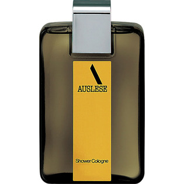

返回列表
产品名称：アウスレーゼ シャワーコロン

資生堂 アウスレーゼ シャワーコロン ＿
メーカー 資生堂
JANコード 4901872330805
商品の特徴
気軽に楽しめるライトな香り立ち。スマートで洗練された印象のフローラルシトラスの香り。
成分・分量
-
用法及び用量
・シャワーのあとや外出前に、手にとって直接からだにおつけください。その場合は、日光のあたらないところにおつけください。
＜使用時の注意＞
◇高温となる場所、直射日光のあたる場所には保管しないでください。
◇乳幼児の手の届かないところにおいてください。
◇淡い色の衣服には、直接お使いにならないでください。
◇肌の敏感はかたは、直接肌にお使いにならないでください。